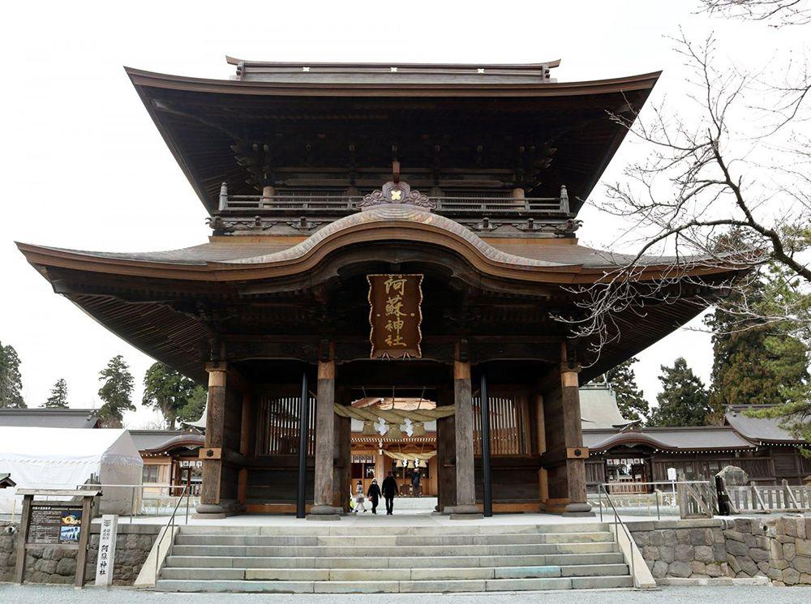

阿蘇神社（Aso-jinja）

住所
〒869-2612
熊本県阿蘇市一の宮町宮地3083-1
旧国名
肥後国一宮
御祭神
健磐龍命（たけいわたつのみこと）
阿蘇神社について
阿蘇神社は、阿蘇を開拓した健磐龍命（たけいわたつのみこと）をはじめ家族神12神を祀っています。古来、阿蘇山火山口を御神体とする火山信仰と融合し、
肥後国一宮として崇敬を集めてきました。社記によれば、御創建は孝霊天皇9年（紀元前282年）とされています。
平成28年（2016）4月に起きた熊本地震により、楼門および拝殿等が倒壊するなど甚大な被害を受けました。2千年以上の長い歴史のなかで、
これまで自然災害や人災などで社殿が困難に見舞われた記録が残っていますが、先人の努力により幾度となく復興されてきました。
今回の熊本地震で被災したのは、天保11年（1840）から嘉永3年（1850）に竣工した一の神殿・二の神殿・三の神殿・楼門・神幸門・還御門の6棟で、
平成19年（2007）に国の文化財に指定を受けたものでした。なかでも倒壊した楼門は、九州最大の規模を誇り、「日本三大楼門」の一つともいわれています。
この楼門は、阿蘇神社のシンボルとして広く人々に親しまれていました。
復旧作業には技術的にも困難を極めましたが、懸命な災害復旧工事が進められ令和5年12月に完了しています。